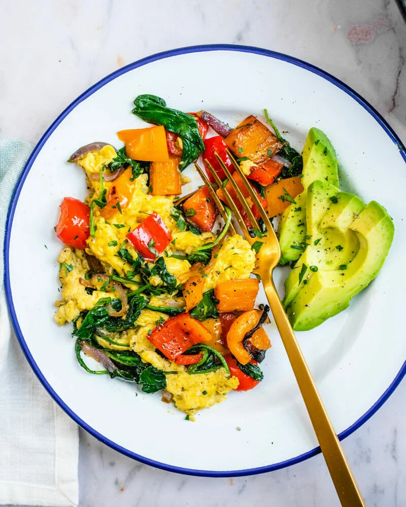

Breakfast Scranble
Discription
want a delicious and healthy breakfast
that includes many vegetables and is
a great start to your day
Ingredients
- 2 tablespoons olive oil
- 1/2 red onion
- 1 red bell pepper (or 1/2 red and 1/2 orange
- 4 cups baby kale or spinach
- 1 tablespoon chopped chives or other fresh herbs
- 4 eggs
- 1/4 cup shredded Colby cheese or crumbled goat cheese
- 1/4 teaspoon kosher salt
- Fresh ground black pepper
- Avocado slices, for serving
Steps
-
prep veggies cut onion into
thin slices and dice the pepper into
largechunks
-
prep eggs crack eggs inot a
medium bowl and mix until well beaten.
Add shredded cheese, fresh herbs, salt,
and a healthy amount of fresh ground pepper
-
cook your veggies Heat olive oil
in a large pan over medium high heat. After it
is up to temp, add onions and peppers.
Cooks for 3 to 4 minutes until they are
tender and a little brown, reduce heat to low,
add a little salt and the baby greens.
Cook until wilted, remove from heat and set asided
-
Cook the eggs Keep heat on low.
Pour in the eggs. Cook for 20 to 30 seconds.
When the eggs just start to set, use a flat
spatula to scrape sections of eggs, gently
stirring constantly until cooked but still
soft, about 1 minute.
-
Add the vegetables and serve
add veggies to the pan with the eggs,
stir for a few seconds until combined,
then serve immediately
Back to recipes